Reading the data¶
[ ]:
import pandas as pd
import plotly.express as px
import plotly.graph_objs as go
[ ]:
FILE_PATH = '/content/drive/MyDrive/01 - Iniciação Científica/02 - Datasets/csv_files/EN2_STAR_MON_0100725706_20070516T060226_20071005T074409.csv'
[ ]:
df = pd.read_csv(FILE_PATH)
df.head()
| DATE | WHITEFLUX | |
|---|---|---|
| 0 | 2007-05-16 18:11:00.787644 | 75564.110 |
| 1 | 2007-05-16 18:19:32.829687 | 75574.570 |
| 2 | 2007-05-16 18:28:04.871730 | 75547.414 |
| 3 | 2007-05-16 18:36:36.913772 | 75688.330 |
| 4 | 2007-05-16 18:45:08.955815 | 75712.540 |
[ ]:
import numpy as np
x = df.DATE.to_numpy()
y = df.WHITEFLUX.to_numpy()
Mathematical Requirements¶
Fourier transform (FT)¶
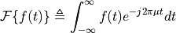
Convolution¶
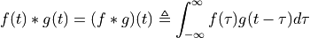
Convolution theorem¶
Taking the Fourier transform of 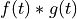, we have:
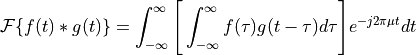
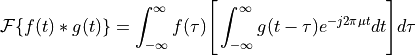
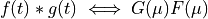
The double arrow means that the expression on the right side is obtained by taking the Fourier transform of the expression on the left, as well as, the expression on the left was obtained by taking the inverse Fourier transform of the expression on the right.
# Frequency Domain Filtering Fundamentals¶
Introduction¶
Filtering in the frequency domain consists of modifying the Fourier transform of an signal (can be a image, a media file, a light curve…) and then computing the inverse tranform to obtained the processed result. Thus, given a digital signal,  , of size
, of size  , the basic filtering equation is:
, the basic filtering equation is:
![g(x) = \mathcal{F}^{-1}[H(u)F(u)] \\](_images/math/2e2aff7d49c74481ed7122d2a3ecc60e95aabacd.png)
where  is the Inverse discrete Fourier transform,
is the Inverse discrete Fourier transform,  is the Fourier transform of the given function (input),
is the Fourier transform of the given function (input),  is the filter transfer function, and
is the filter transfer function, and  is the filtered signal (output). Both
is the filtered signal (output). Both  ,
,  and
and  are arrays of size , the same as the input signal. The product
are arrays of size , the same as the input signal. The product  is formed using array multiplication; that is,
is formed using array multiplication; that is,  .
.
Expand lightcurves borders¶
Zero Padding, 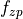, has the following definition:
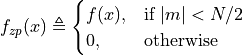
where:
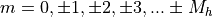, with $M_h \triangleq `(M-1)/2 $ for :math:`M odd, and 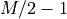 for even.
Padding remove the implicit periodicity of the funcion that can appeared on the filtered data. In other terms, the padding prevents the convolution of two functions from generating unexpected (periodic) results.
[ ]:
def artifical_borders(array, num):
aux_pre = np.zeros(num)
aux_pos = np.zeros(num)
i = 0
for i in range(num):
aux_pre[i] = array[0]
aux_pos[i] = array[-1]
return np.concatenate((aux_pre, array, aux_pos)).ravel()
[ ]:
# Defining the numbers of points to be added
param = 70
[ ]:
y_artifical_borders = artifical_borders(y, param)
print("The original length was:", len(y), ", and now we have:", len(y_artifical_borders), "\nThe difference is:", (len(y_artifical_borders) - len(y) ))
The original length was: 23952 , and now we have: 24092
The difference is: 140
Avoiding wraparound error¶
[ ]:
def padding(array):
return np.append(array, np.zeros(len(array)))
[ ]:
y_padding = padding(y_artifical_borders)
print("The previous length was:", len(y_artifical_borders), ", and now we have:", len(y_padding), "\nThe difference is:", (len(y_padding) - len(y_artifical_borders) ))
The previous length was: 24092 , and now we have: 48184
The difference is: 24092
Centering the transform¶
Specification of is simplified considerably by using functions that are symmetric about their center, which requires that be centered also. This is accomplished by multipying the input signal, , by  , where
, where  is the array index, prior to computing its Fourier transform.
is the array index, prior to computing its Fourier transform.
[ ]:
def multiplying_by_minus_one_to_index(array):
i = 0
new_array = np.ones(len(array))
for i in range(len(array)):
new_array[i] = array[i] * ( (-1)**(i) )
return new_array
[ ]:
y_multiplied = multiplying_by_minus_one_to_index(y_padding)
Fourier Transform¶
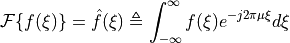
where  is any real number,
is any real number,
[ ]:
def fourier_transform(array):
fft = np.fft.fft(array)
return fft
[ ]:
y_fft = fourier_transform(y_multiplied)
[ ]:
y_fft
array([-16673.57200001+8.36371328e-09j, 47796.28989974+1.23804272e+04j,
1859.81772268+2.77695961e+04j, ...,
79054.83095289-8.48836152e+03j, 1859.81772268-2.77695961e+04j,
47796.28989975-1.23804272e+04j])
Butterworth transfer function¶
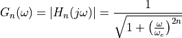
nyquist = < 0.01 muito ruim
0.5 ruim
ordem = 3 e 4 podem alterar o resultado, deve ser menor (talvez)
[ ]:
cutoff_freq = 0.2 # Nyquist
order = 2
[ ]:
(n_time, columns) = df.shape
n_time
23952
[ ]:
d0 = cutoff_freq * n_time
xc = n_time
[ ]:
filter = np.zeros(int(2*(n_time + 2*param)))
len(filter)
48184
Creating a filter array¶
[ ]:
for i in range(int(2.0*n_time + param)):
filter[i] = 1.0/ (1.0+(abs(i-(xc-1.0))/d0)**(2.0*order))
[ ]:
filter
array([0.00159771, 0.00159798, 0.00159824, ..., 0. , 0. ,
0. ])
Applying the filter -> Array product¶
Consider the following 2x2 matrices:
The array product is defined by
[ ]:
y_butter = filter * y_fft
y_butter
array([-26.63954048+1.33627922e-11j, 76.377367 +1.97836366e+01j,
2.97244137+4.43825733e+01j, ..., 0. +0.00000000e+00j,
0. +0.00000000e+00j, 0. +0.00000000e+00j])
Inverse Fourier Transform¶
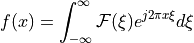
where is any real number,
[ ]:
def inverse_fourier_transform(array):
ifft = np.fft.ifft(array)
return ifft
[ ]:
y_ifft = np.real(inverse_fourier_transform(y_butter))
y_ifft
array([ 46106.38618151, -60407.84594294, 70102.40591138, ...,
-5461.64743604, 15156.20730318, -29457.6671153 ])
Removing Zero Padding¶
[ ]:
y1 = y_ifft[:int(len(y_ifft)/2)]
print("The before length was:", len(y_ifft), ", and now we have:", len(y1))
The before length was: 48184 , and now we have: 24092
[ ]:
y1
array([ 46106.38618151, -60407.84594294, 70102.40591138, ...,
-70754.45328098, 60969.72307444, -46535.23777034])
Cuting artificial borders¶
[ ]:
param = param # equals 70, but we might change that value
[ ]:
y2 = np.delete(y1, np.s_[:param])
y3 = np.delete(y2, np.s_[-param:])
y3
array([ 75576.34518548, -75593.06708911, 75615.50871701, ...,
-76233.54926403, 76241.75815325, -76251.19480945])
Re-multiplying data by  ¶
¶
[ ]:
y_filtered = multiplying_by_minus_one_to_index(y3)
y_filtered
array([75576.34518548, 75593.06708911, 75615.50871701, ...,
76233.54926403, 76241.75815325, 76251.19480945])
Results¶
[ ]:
fig = go.Figure()
fig.add_trace(go.Scatter(x=x, y=y,
mode='lines',
name='Original Light Curve'))
fig.add_trace(go.Scatter(x=x, y=y_filtered,
mode='lines',
name='Light Curve Filtered'))
fig.update_layout(title='Light Curve before and after the Butterworth filter',
xaxis_title='Date',
yaxis_title='Whiteflux')
fig.show()
Output hidden; open in https://colab.research.google.com to view.